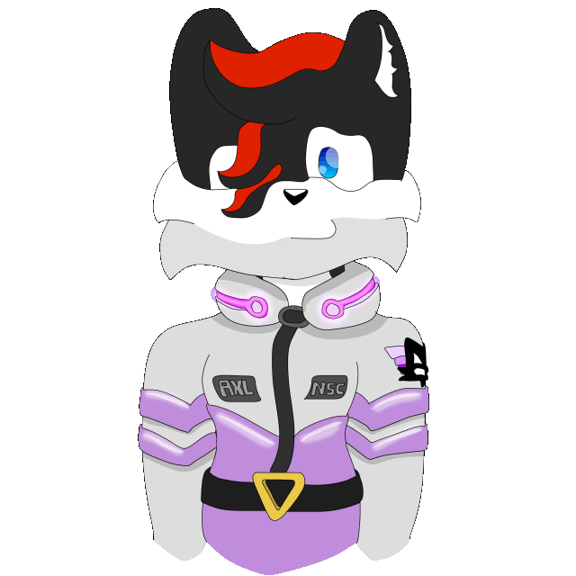

About Axl ...Just Who The Heck Am I?
Age: 21
Hobbies: Art, Retro Machines, Tech Repair / Tinkering,
Photography,

Most Favourite Retro Machines:
Apple IIGS, Apple Macintosh, Apple II,
Commodore Amiga, Dragon 32
Home Country: United Kingdom
Fursona: Anthropomorphic Alien Wolf ("Vionan")
Random Facts:
I've been a furry since the latter end of 2018. I only started making art some time in 2019.
Due to (to be blunt) sheer fucking stupidity on my part, a lot of my earliest artworks are now completely lost
I use retro tech wherever I can. I've found it to be much more reliable.
I daily drive a Samsung SGH-E900 as my phone.
Before I learned to pose, I used to rely on models in
Garry's Mod to pose with. It wasn't until my (modern, go figure)
laptop bit the dust that I finally learned how to pose properly.
I've made several basic pieces of software, including a (way
too) basic login system for the Apple //e (Later ported to the Commodore
64),
a script that picks one of my characters at random, and a test text
adventure for the Dragon 32.
The Software I use to make art:
GSPaint (Apple IIGS)
MacPaint (Apple Macintosh)
DeluxePaint V (Commodore Amiga)
Firealpaca (Windows)
...Paper
(Technically that's hardware, but still.)


Created With Love By Axl Woodland. Last Update: 15/11/2026